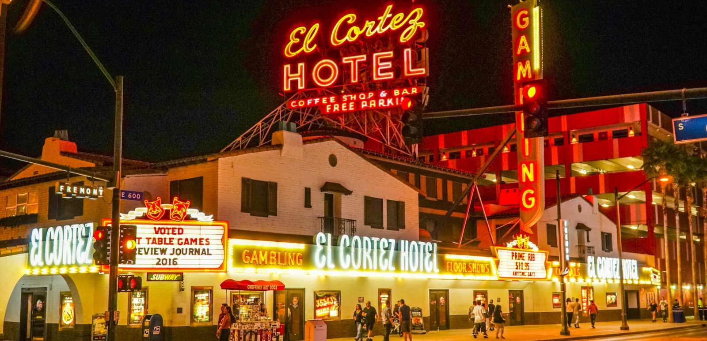
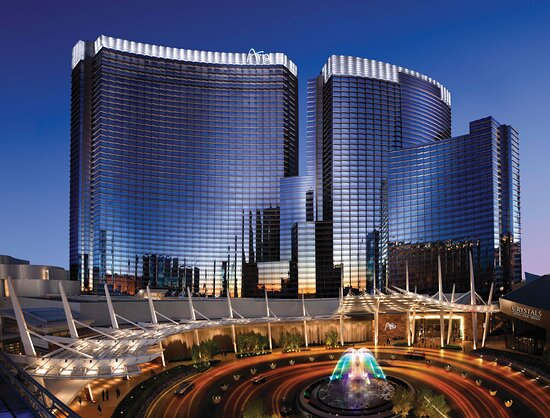
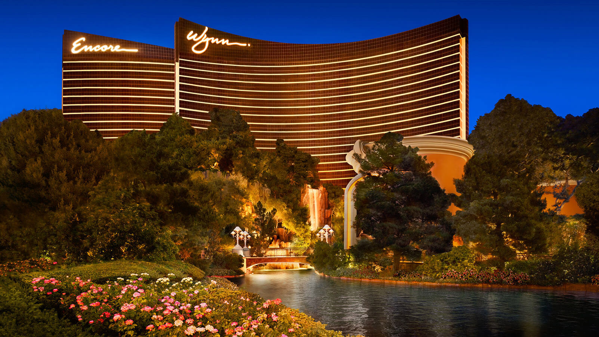

El Cortez
El Cortez is my favorite casino to gamble at in Las Vegas. This may be biased, but I have had my best gambling experiences there, especially at the baccarat and blackjack tables. I like playing their table games as they have minimums that go as low as $10 for blackjack and $25 for baccarat, which is much better for me as I play for fun and don't want to bet $50-$100 each hand as a minimum like a lot of the casinos on the strip.
I was lucky enough to turn $100 into $1100 while playing baccarat and $200 into $420 playing blackjack at the El Cortez. So it is definitely the casino I think of first when I want to play table games in Las Vegas!

Bellagio
Bellagio is one of my favorite casino hotels to stay in. Not only do they have very nice rooms and great options for brunch/lunch/dinner, but it is also like right in the center of the strip, with tram and walking access to the Aria, Park MGM, and many other hotels and casinos!
I like staying at the Bellagio because it doesn't feel super low end like some other hotels nearby and I have easy access to virtually any hotel and casino on the strip.
Aria
Aria is another one of my go-to casino hotels to stay in. Even though there isn't a concrete theme to it, I really like the color scheme and design of everything inside. Not to mention the hotel rooms are also very nice and classy as well.
Aria is like Bellagio where it is a great choice if you want to stay in a comfortable and classy resort without sacrificing location.

Wynn/Encore
The Wynn is probably the most unique and classy casino of the strip. However, I personally do not like to stay in the Wynn. Other than the fact that it is more expensive to stay in, all of the table games are also very high limits and it feels as if they are meant for more hardcore gamblers. The Encore is Wynn's more luxurious hotel casino where the limits on slots and table games are even higher, along with the hotel rooms too. But the worst of all is that they are further up on the strip, placing them far away from most attractions on the strip!
Even though I enjoy visiting the Wynn and Encore, they are definitely not hotels I would choose to stay at. Especially since they are so far from the other hotels, casinos, and other attractions on the strip.
